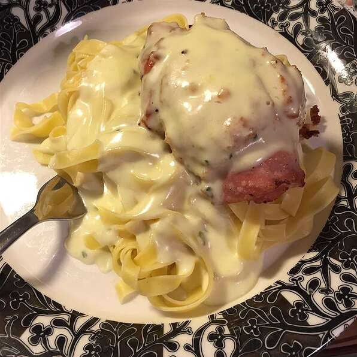

Weeknight Chicken Cordon Bleu

Description
This is a tasty and quick recipe that is great for a weeknight when you want something yummy and don't have the time. Great over noodles.
Ingredients
- 1 cup milk
- 1 cup dry bread crumbs
- 6 skinless, boneless chicken breast halves - pounded to 1/4 inch thickness
- salt and pepper to taste
- 6 slices cooked ham
- 6 slices Swiss cheese
- 2 tablespoons vegetable oil
- 1 (10.5 ounce) can condensed cream of chicken soup
- 1/2 cup heavy cream
Steps
- Preheat oven to 350 degrees F (175 degrees C).
- Place milk and bread crumbs in two separate shallow bowls. Season the chicken with salt and pepper. Place one slice of ham and one slice of cheese on each piece of chicken; roll, and secure with toothpicks. Dip each chicken roll into milk, and then into breadcrumbs.
- Heat oil in a large skillet over medium-high heat. Brown rolled chicken on all sides. Arrange the chicken in a 9x13 inch baking dish.
- In a small saucepan over medium heat, blend soup and cream; season with salt and pepper to taste. Pour over the chicken.
- Bake in the preheated oven for 15 minutes, or until chicken is no longer pink and juices run clear.
Back to Main Site